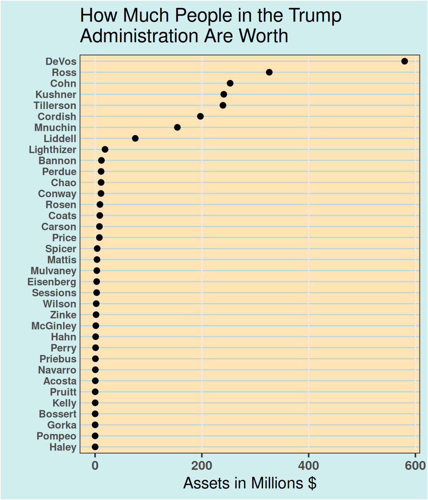

In real-world datasets, categorical features are quite common but tricky during both the data pre-processing and visualization process. In this chapter, we will demonstrate several plotting options for the uni-dimensional categorical variables with ggplot.
8.1 Bar plot
There are two types of uni-dimensional categorical variables: nominal and ordinal. Here you will be shown how these variables should be plotted differently using bar plot under the same dataset.
8.1.1 Nominal data
Nominal data is data with no fixed category order and should be sorted from highest to lowest count (left to right, or top to bottom)
By default, R always sorts levels in alphabetical order. To reorder it by a sorted value, you can try fct_reorder , fct_rev, fct_relevel in the forcats package
Cleveland dot plot is a good alternative to bar plots, making plots more readable and comparable even with more data. Similarly, we also need to reorder the categorical variables just like what we’ve done for nominal bar plot.
8.2.3 Example: How Much People in the Trump Administration Are Worth
# create dot plot themetheme_dotplot<-theme_bw(16)+theme(axis.text.y =element_text(size =rel(.8)), axis.ticks.y =element_blank(), axis.title.x =element_text(), axis.text =element_text(face ="bold"), plot.background =element_rect(fill ="lightcyan2"), panel.background =element_rect(fill ="moccasin"), panel.grid.major.x =element_line(size =0.5), panel.grid.major.y =element_line(size =0.5, color ="lightblue"), panel.grid.minor.x =element_blank(), strip.text =element_text(size =rel(.7)), legend.position ="top")# data source:# NYT, How Much People in the Trump Administration Are Worth# https://www.nytimes.com/interactive/2017/04/01/us/politics/how-much-people-in-the-trump-administration-are-worth-financial-disclosure.htmldf<-read.csv("data/Assets.csv")# change units to millionsdf$Assets<-df$Assets/1000000ggplot(df, aes(x =Assets, y =reorder(Name, Assets)))+geom_point()+ggtitle("How Much People in the Trump\nAdministration Are Worth")+xlab("Assets in Millions $")+ylab("")+theme_dotplot

# create Panel columndf<-df|>mutate(Panel =cut(Assets, 4, breaks =fivenum(Assets), labels =c("$66k - $604k", "$1 - 3.5 Million","$4 - 12 Million", "$18 Million+")))|>mutate(Panel =fct_rev(Panel))ggplot(df, aes(x =Assets, y =reorder(Name, Assets)))+geom_point()+facet_wrap(~Panel, ncol =1, scales ="free")+ggtitle("How Much People in the Trump\nAdministration Are Worth")+xlab("Assets in Millions $")+ylab("")+theme_dotplot